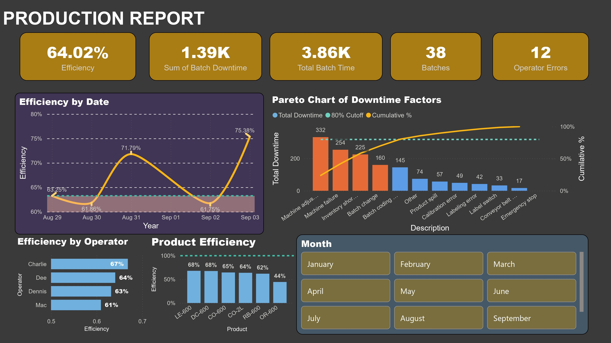

An interactive manufacturing dashboard built to help supervisors scan performance, rank losses, and act on the few issues creating most downtime.

This dashboard combines production logs, product standards, and downtime factors into a focused decision view for daily manufacturing reviews.
Clean the raw logs in Power Query, then organize them into a star schema so slicers stay fast and measures remain reliable.
0.Fact Line Productivity and Line downtime for batch IDs, dates, and duration minutes.Downtime factors and Products as dimension tables.Create the baseline DAX measures that power the summary cards, trend lines, and Pareto chart.
// Calculates total time recorded per batch Actual Batch Time = SUM('Fact Line Productivity'[Batch time]) // Calculates expected time based on product standards Standard Batch Time = SUM('Fact Line Productivity'[Products.Standard batch time]) // Core Efficiency Ratio Efficiency = DIVIDE([Standard Batch Time], [Actual Batch Time], 0) // Base measure for Pareto charting Total Downtime = SUM('Line downtime'[Downtime])
Resolve tied downtime values with a stable alphabetical tie-breaker, so the cumulative Pareto line stays accurate instead of flattening.
Cumulative Downtime = VAR CurrentDowntime = [Total Downtime] VAR CurrentDesc = MAX('Downtime factors'[Description]) RETURN IF( ISBLANK(CurrentDowntime), BLANK(), CALCULATE( [Total Downtime], FILTER( ALLSELECTED('Downtime factors'[Description]), [Total Downtime] > CurrentDowntime || ([Total Downtime] = CurrentDowntime && 'Downtime factors'[Description] <= CurrentDesc) ) ) )
Cumulative % = IF( ISBLANK([Total Downtime]), BLANK(), DIVIDE( [Cumulative Downtime], CALCULATE([Total Downtime], ALLSELECTED('Downtime factors'[Description])) ) )
This measure dynamically assigns a hex color code based on where the bar sits relative to the 80% cutoff line.
Pareto Bar Color = IF( [Cumulative %] <= 0.80, "#E66C37", // The Orange color for the Top 80% offenders "#5C9CE6" // The Blue color for the remaining 20% )
Use these canvas settings to reproduce the final visuals cleanly in Power BI.
Description column from the Downtime factors table.Total Downtime.Cumulative %.Total Downtime. Click the dots again and ensure Sort descending is selected.Pareto Bar Color measure.0.8 -> Style: Dashed.Efficiency, Total Batch Time, and Total Downtime.Date against Efficiency.Efficiency measure.